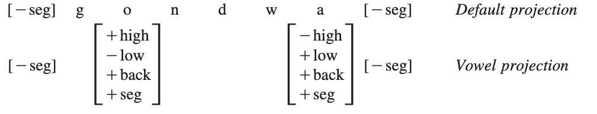

言語情報解析演習II 期末課題
1 序論
本レポートは、Hayes & Wilson (2008) による論文「A Maximum Entropy Model of Phonotactics and Phonotactic Learning」に基づき、音韻論における最大エントロピーモデルの理論的意義と学習モデルとしての貢献を考察することを目的とする。音韻配列論（phonotactics）は、言語における音の並びの合法性を扱う音韻論の中核的課題であり、Chomsky & Halle (1965) によって提起された「なぜ母語話者は存在しないが容認可能な形式と、存在せず容認不可能な形式を区別できるのか」という問いは、音韻配列論の文法の特性化と獲得原理の理解という二つの科学的課題を提示している。本論文は、この課題に対し、最大エントロピーの原理に基づいて数値的に重み付けされた制約からなる音韻配列論的文法と、陽性証拠からそのような文法を構築する学習アルゴリズムを提案している。特に、工学的応用や機械学習技術の詳細には深入りせず、理論言語学的観点から、本モデルが音韻制約理論に与える貢献に焦点を当てて分析を進める。
2 モデルの概要：最大エントロピーと音韻制約
Hayes & Wilson (2008) は、音韻配列論的文法が、最大エントロピーの原理に従って数値的に重み付けされた制約群から構成されると提唱する。このモデルにおいて、形式の適格性（well-formedness）は、その制約違反の重み付き合計によって決定される確率として形式化される。このアプローチの核心は、適格性が確率として解釈され得ることである。
2.1 確率的適格性の概念
無限の音韻的表層形式の集合\(\Omega\)を仮定し、最大エントロピー文法はその各要素\(x \in \Omega\)に対し、その音韻配列論的適格性を表す確率\(P(x)\)を割り当てる。個々の形式の確率自体は極めて小さいが、これらの確率間の差異が重要であり、それが適格性の度合いを反映する。提案される制約セットが適切であれば、最大エントロピー文法が形式に割り当てる確率は、母語話者の適格性判断と対応し、容認性が低いと判断される形式ほど低い確率が割り当てられるという仮説が立てられている。
2.2 最大エントロピー文法における確率の割り当て
最大エントロピー文法は、選択された表象語彙で記述された一連の制約を用いて確率を割り当てる。これらの制約は、音韻形式の多重かつ重複する特徴付けを可能にするため、特徴的・構造的その他の区別を参照できる。本モデルにおける全ての制約は、最適性理論 (prince2004Optimality?) における「有標性制約 (markedness constraints)」の意味で用いられる。入力や忠実性制約は役割を果たさない。
文法内の各制約は、非負の実数である重み\(w_i\)を持つ。重みは、他の制約に対するその制約の重要度を測るものと考えることができる。重みが大きい制約ほど、違反する形式の確率を低下させる効果が強い。
形式の確率は、その制約違反と重みから算出される。まず、各形式のスコア\(h(x)\)が定義される。
\[ h(x) = \sum_{i=1}^{N} w_i C_i(x) \quad (4) \]
ここで、\(w_i\)は\(i\)番目の制約の重み、\(C_i(x)\)は形式\(x\)が\(i\)番目の制約に違反する回数、\(N\)は全ての制約の総数を表す。
次に、形式\(x\)の最大エントロピー値\(P^*(x)\)が算出される。
\[ P^*(x) = \exp(-h(x)) \quad (5) \]
これは、スコアを負の値にして、自然対数の底\(e\)をその結果の指数とする。この負号の存在は、違反が多い形式ほど値が低くなるという最大エントロピー値の意味合いから理解できる。
\(x\)の実際の確率\(P(x)\)は、\(\Omega\)内の全ての可能な形式の総最大エントロピー値\(Z\)に対する\(x\)のシェアを決定することで計算される。
\[ P(x) = P^*(x) / Z \quad (6) \]
ただし、\(Z = \sum_{y \in \Omega} P^*(y)\)である。
このモデルでは、制約が「結託する（gang up）」という見解を採用している。つまり、(4)の加算段階により、2つの制約AとBが単独でAまたはBを違反した場合に予想されるよりも、形式のステータスを共同で低下させることが可能となる。これは、重みベースのモデルに固有の現象ではないが、本モデルの重要な特性である。
3 制約の形式と学習アルゴリズム
本モデルの学習アルゴリズムは、観察された形式の確率を最大化する制約の重みを探索することと、可能な制約の空間から適切な制約を選択することの2段階で構成される。
3.1 最大エントロピー重みの学習
学習者は、目標言語から抽出された大規模で代表的な観察形式の集合にアクセスできるが、非合法的な形式に関する「負の証拠」にはアクセスできないと仮定される。これは実際の言語学習者が直面する状況と整合すると考えられる。目標は、観察された形式の確率\(P(D)\)を最大化する制約重みの集合を見つけることである。
\[ P(D) = \prod_{x \in D} P(x) \quad (7) \]
ここで、\(P(D)\)は観察されたデータ\(D\)の確率、\(P(x)\)は(6)で定義された形式\(x\)の確率である。
「最大エントロピー」という用語は、この目標に関連している。エントロピーは、システム内のランダム性の量を情報理論的に測る尺度であり、形式の確率が前述のように定義される場合、エントロピーを最大化することは、制約が与えられた場合に観察された形式の確率を最大化することと等価であるという定理 (Hayes & Wilson, 2008) が存在する。
重みを見つける探索は、各制約に同じ初期重み（シミュレーションでは常に1）を与えることから始まる。システムはその後、\(P(D)\)を最大化するための反復計算を実行する。この計算は、重みによって定義される多次元表面を上昇経路で辿り、最高値に達するまで\(P(D)\)の値を高め続ける。この反復上昇プロセスは、勾配（傾き）を計算することで行われる。各偏導関数\(\frac{\partial}{\partial w_i} \log(P(D))\)は、制約\(C_i\)の観察された違反数と期待される違反数との差\(O[C_i] - E[C_i]\)に等しい。\(O[C_i]\)は学習データから直接計算され、\(E[C_i]\)は有限状態機械を用いて、無限の可能性のある音韻的表現の集合から近似される。
3.2 可能な制約空間の探索
このモデルは、言語獲得における帰納的ベースラインを確立することを目指しており、UGから与えられる事前制約セットに依存しない。UGは素性インベントリと制約形式を決定し、そこから大きな探索空間が生まれるが、適切な探索ヒューリスティックを用いることで効果的に探索可能であると提唱されている。
3.2.1 制約形式
モデルは2つの基本的な制約タイプを構築する。1つは素性行列の単なるシーケンスであり、SPE (Chomsky and Halle, 1968) と同様に機能する。もう1つは論理的含意を含む制約であり、特定の素性値を持つセグメントが存在する場合、先行/後続のセグメントが特定の素性値を持たなければならない、という形式である。この含意演算子を、制約のいずれかの行列を補集合演算子\(~\)で修飾することを可能にし、より小さく解釈しやすい文法を作成する。
3.2.2 制約数の制限と探索ヒューリスティック
可能な制約の数は、自然クラスの数\(|C|\)と制約内で発生しうる素性行列の最大数\(n\)に比例して指数関数的に増加する。
\[ \sum_{i=1}^{n} |C|^i \]
このモデルでは、探索可能な制約セットを数千万の範囲に制限するために、\(|C|\)と\(n\)を制約する提案を行っている。特に、\(n\)は制約の内部的な複雑さに敏感であるべきだとし、制約のサイズとその特異性の間にトレードオフが存在するとする。
学習者は、制約を選択する際に「正確性（accuracy）」と「一般性（generality）」という探索ヒューリスティックを用いる。
- 正確性: 制約の正確性は、データ中に観察された制約違反の数\(O[C_i]\)を、現在の文法の下で期待される違反の数\(E[C_i]\)で割ったもの（\(O/E\)）として定義される。言語は正確な制約を好むという仮説に基づき、\(O/E\)値が低い制約ほど強力であるとされる。
- 一般性: 正確性スケールによって定義される層内では、より一般的な制約が選択される。これは、短い制約（行列が少ない）は長い制約よりも一般的であると見なされ、同じ長さの制約の中では、その行列が最も一般的な素性表現を含むものが優先されるという形で実装される。
3.3 音韻配列論的文法の学習アルゴリズム
学習のプロセスは、制約選択と制約重み付けを交互に行う。新しい制約が選択され、その後全ての制約が再重み付けされる。この交互の手順は、制約選択における\(O/E\)正確性基準によって必要とされる。新しい制約が導入され、重み付けされると、既存の制約の\(E\)値が変化するため、この変化した値が追加の制約を選択する上で関連するためである。全体のアルゴリズムは以下の通りである。
- 空の文法\(G\)から開始する。
- 各正確性レベル\(\epsilon\)について反復する:
- \(\epsilon\)よりも正確性の低い（もし存在するなら）最も一般的な制約を選択し、\(G\)に追加する。
- \(G\)内の制約の重みを学習する。
- ステップ2aで制約が選択されなくなるまで繰り返す。
4 実験と結果：理論的含意に焦点を当てる
論文では、提案されたモデルの有効性を検証するために、英語の音節頭子音群、ショナ語の母音調和、ストレスパターン、そしてWargamay語という複数の言語データに対する学習シミュレーションを行っている。ここでは、その中でも特に言語理論的含意が明確な結果に焦点を当てる。
4.1 英語の音節頭子音群と段階的適格性
英語の音節頭子音群は、音韻配列論的学習モデルのテストに理想的な領域である。母語話者の段階的判断（gradient judgments）を再現する能力が検証された。学習モデルの予測値（最大エントロピー値\(P^*(x)\)）と被験者の容認度（「yes」回答の割合）との相関は\(r=0.946\)という高い値を示し、これはモデルが被験者の回答の大部分の変動を説明できることを意味する。
比較として、手作業で作成された文法や、素性情報を利用しない単純なn-gramモデルなど、5つの代替モデルとの比較が行われた。結果として、本モデルで機械学習された文法は、手作業で作成された文法（Clements and Keyser, 1983）をわずかに上回る性能（\(r=0.936\)）を示した。これは、本モデルが音韻論の標準的な装置である素性（features）と自然クラス（natural classes）を効果的に利用しているためであると考察されている。
この結果は、最大エントロピーモデルが単に範疇的な音韻配列論的パターンだけでなく、実験的に観察される段階的な適格性判断も自然な形で捉えることができるという、モデルの重要な特性を裏付けている。また、モデルが汎用的な制約を探索し、自然クラスに基づいた学習を行うことで、既存の形式だけでなく、未出現の形式に対する判断も適切に予測できることを示している。これは、音韻理論が単なる既知のデータの記述にとどまらず、新しいデータに対する予測能力を持つことの重要性を示唆する。
4.2 非局所的音韻配列論：ショナ語の母音調和と超分節的階層
ショナ語の母音調和は、非隣接する音に制約を課す非局所的な音韻配列論的パターンである。この非局所性を扱うために、初期の帰納的ベースラインモデル（純粋に線形的なSPEスタイルの特徴束アプローチ）では、母音調和を学習することに失敗した。これは、4行列制約の仮説空間が膨大であり、関連する母音間の制約を見つける前に探索時間が尽きてしまうためであった。
この失敗に対応するため、本論文では「投射（projection）」という概念を導入する。これは、音韻的表象の中から特定の素性値を持つ要素のみを抽出し、そのサブストリングに対して制約を適用するというものである。特に、母音調和には母音のみで構成される「母音投射（vowel projection）」が用いられた。例えば、gondwaのような形式は、デフォルトの投射（完全な表象）と母音投射（o-aという母音のシーケンス）の両方で表現される。

母音投射を導入した学習モデルでは、母音調和に不可欠な制約が迅速に発見された。例えば、非初期の中母音が先行する中母音によってライセンスされないことを禁止する制約や、oが先行するoによってライセンスされるというより厳格な要件を課す制約などである。このモデルは、初期のモデルでは失敗したmVndVmaのような形式の母音調和を正確に分類することができた。
この結果は、音韻論的表象が母音層（vowel tier）のような装置を含むべきであるという学習理論的な支持を提供している。すなわち、限られた探索空間を持つ学習者にとって、非局所的な現象を局所的な制約として表現することを可能にする投射のような階層的表象は、音韻配列論の学習を可能にするために不可欠であるという理論的含意を持つ。
4.3 ストレスパターンと韻律グリッド
ストレスシステムもまた非局所的な音韻配列論の一種である。特に、不定界ストレスパターン（unbounded stress patterns）においてその非局所性は顕著である。本モデルの帰納的ベースラインモデルでは、制約内の素性行列数に上限\(n\)を課すため、単一の音節が主ストレスを持つという「最高点性（culminativity）」や、「末尾優勢規則（End Rule Right）」といった非局所的な制約を捉えることができない。
この問題に対処するため、リズムグリッド（metrical grid）の形式化が導入された。リズムグリッドは、ストレスパターンにおける非局所的な関係を局所的な術語で表現することを可能にする。本モデルでは、母音調和と同様に投射の仕組みを利用してリズムグリッドを形式化した。例えば、主ストレス層（main stress row）、ストレス層（stress row）、音節層（syllable row）といった異なる投射が定義され、それぞれがストレスレベルや音節の重さといった韻律的特徴を表現する。
この枠組みの下で、本学習者は不定界ストレスパターンを学習することに成功し、全ての合法的な形式には完璧なスコアを、全ての非合法的な形式にはペナルティスコアを割り当てた。これは、リズムグリッドのような階層的な表象が、非局所的な一般化を局所的に記述する形式的原理を用いることを可能にし、それによって学習者の探索空間が制限された状況下でも重要な一般化を発見できることを示している。これは、音韻理論においてリズムグリッドのような階層構造の採用が、単なる記述の優雅さだけでなく、言語獲得可能性（learnability）の観点からも正当化されることを示唆する。
5 理論言語学への貢献
Hayes & Wilson (2008) が提案した最大エントロピーモデルは、音韻論における学習可能性の課題に対して、いくつかの重要な理論的貢献をしている。
5.1 範疇的および段階的パターンの統一的説明
本モデルは、最大エントロピーの原理を音韻配列論に適用することで、範疇的な音韻配列論的合法性（例：ある音の並びが完全に合法か非合法か）と、母語話者の段階的な直感（例：ある音の並びがどの程度「単語らしくない」と感じられるか）の両方を統一的に説明できることを示した。これは、音韻配列論研究において、単に合法・非合法の二分法ではなく、より連続的な適格性の度合いを捉えることの重要性を強調している。従来の範疇的な制約ベースのモデルでは難しかった、言語データの「曖昧さ」や「例外性」を、重み付けされた制約と確率的な解釈を通じて自然に扱える点は、言語現象のより忠実なモデル化に繋がる。
5.2 帰納的ベースラインと音韻理論の正当化
本論文は、「帰納的ベースライン（inductive baseline）」という研究戦略を採用している。これは、非常に単純な理論から始め、より高度な理論的概念（例：超分節的階層や韻律グリッド）を導入することで、ベースラインシステムではアクセスできない音韻配列論的パターンが学習可能になるか否かを検証するアプローチである。ショナ語の母音調和やストレスパターンの学習シミュレーションの結果は、母音層や韻律グリッドといった概念が、音韻配列論的学習を可能にするために不可欠であることを実証した。これらの抽象的な音韻論的表象が、単なる記述的な便宜のためだけでなく、言語獲得メカニズムの観点からもその存在が正当化されるという、強力な学習理論的論拠を提供している。
5.3 制約選択問題への取り組み
最適性理論 (prince2004Optimality?) を含む従来の音韻論的学習モデルの多くは、制約セットが普遍文法 (Universal Grammar, UG) によって事前に提供されると仮定してきた。しかし、本モデルは、UGが素性インベントリと制約形式を決定するものの、個々の制約は学習者がデータの分布から能動的に探索・選択するという立場を取る。この「制約選択問題」に対して、正確性（observed-to-expected ratio, \(O/E\)）と一般性（constraint generality）に基づく探索ヒューリスティックを提案したことは、言語学習者がどのようにして膨大な可能性の中から適切な一般化を発見するかについての洞察を提供する。これは、言語獲得における普遍的原理と経験的学習の相互作用をより深く理解するための基礎となる。
5.4 音韻配列論と形態音韻的交替の関係性
論文では、音韻配列論が形態音韻的交替（alternation）とどのように関連するかについても考察している。OTでは、音韻配列論的制約と忠実性制約の間の階層が、表層形への静的な制約と、それらの制約を遵守する交替の両方を導くとされる (prince2004Optimality?)。しかし、本モデルは、音韻配列論の知識が言語学習者が交替を発見するのを容易にするという、より緩やかな関係性を提唱する。つまり、子供はまず音韻配列論の概略分析を行い、その後で音韻配列論的知識が交替パターンの学習を補助するという段階的な獲得プロセスを示唆している。これは、言語獲得の全体的なアーキテクチャが、音韻論的知識が獲得される漸進的なプロセスを再現するという、「学習理論的音韻論（learning-theoretic phonology）」の概念を提示するものである。
6 結論
Hayes & Wilson (2008) が提案した最大エントロピーモデルは、音韻配列論の学習とモデル化において、その堅牢な数学的基盤、範疇的および段階的パターンを統一的に説明する能力、そして音韻理論における抽象的な表象の学習理論的妥当性を実証した点で、理論言語学に多大な貢献をしている。特に、音韻配列論的文法を重み付けされた制約の集合として捉え、その適格性を確率として解釈するフレームワークは、言語の複雑な統計的性質を捉える新たな道を開いた。
この研究は、普遍文法が提供する基盤の上に、経験的なデータからの学習がいかに具体的な音韻配列論的知識を構築するかを示している。超分節的階層（母音層、韻律グリッド）のような構造の導入が、非局所的な現象の学習を可能にし、これらの理論的要素の必要性を学習可能性の観点から裏付けたことは特筆すべきである。